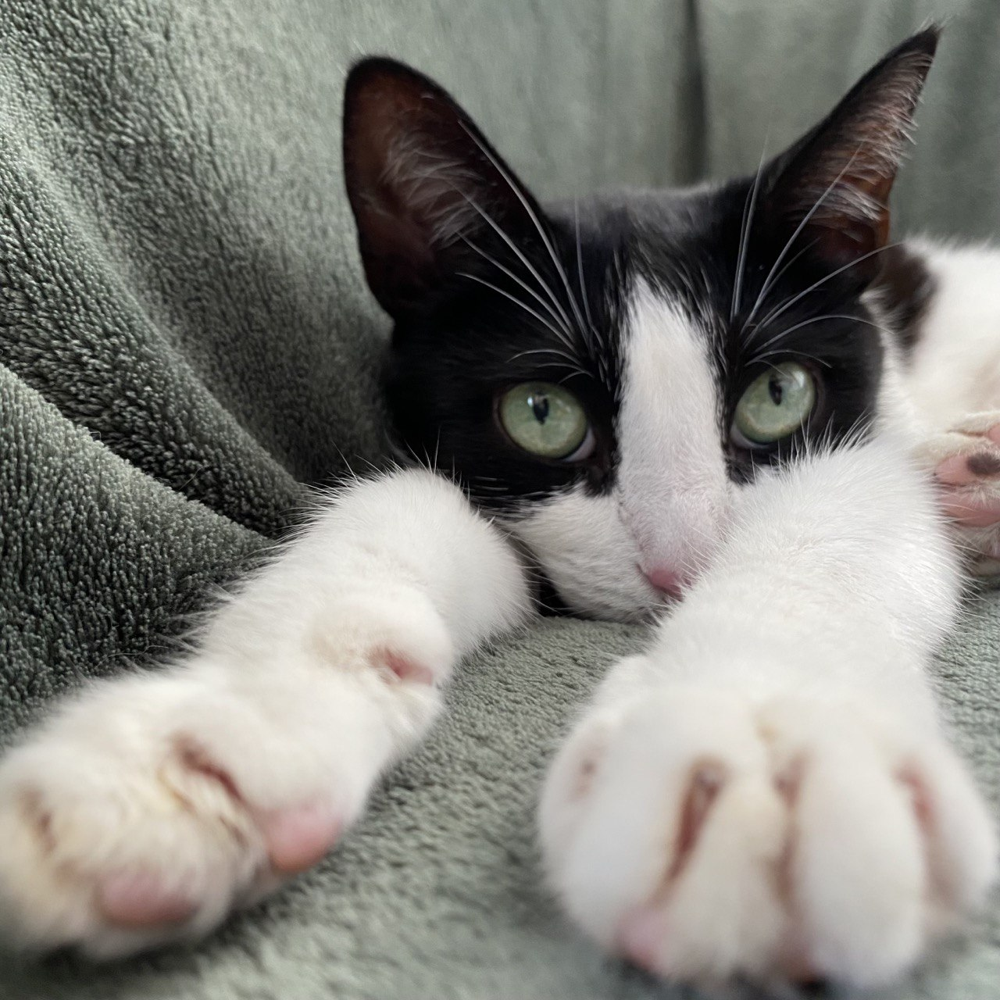
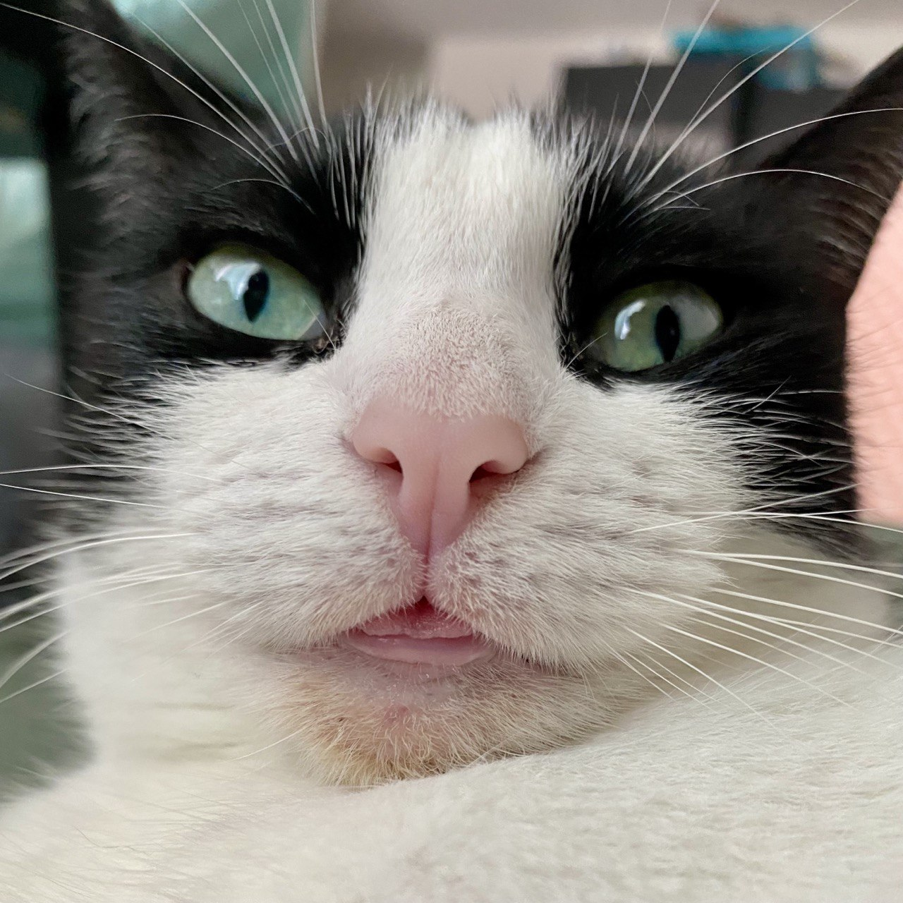

Ещё два года назад я жила в приюте, но быстро релоцировалась и сейчас чилю в Сербии. Я много путешествую, уже успела пожить в 4 странах. По своей натуре я ленивый кочевник: куда родители — туда и я. Мне главное, чтобы на солнышке можно было погреться и чтоб миски полные.